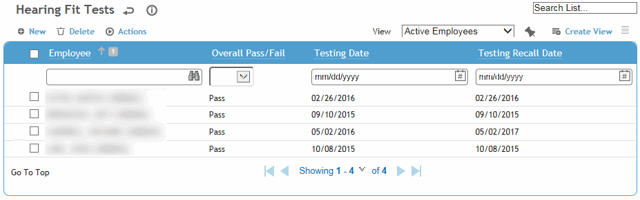
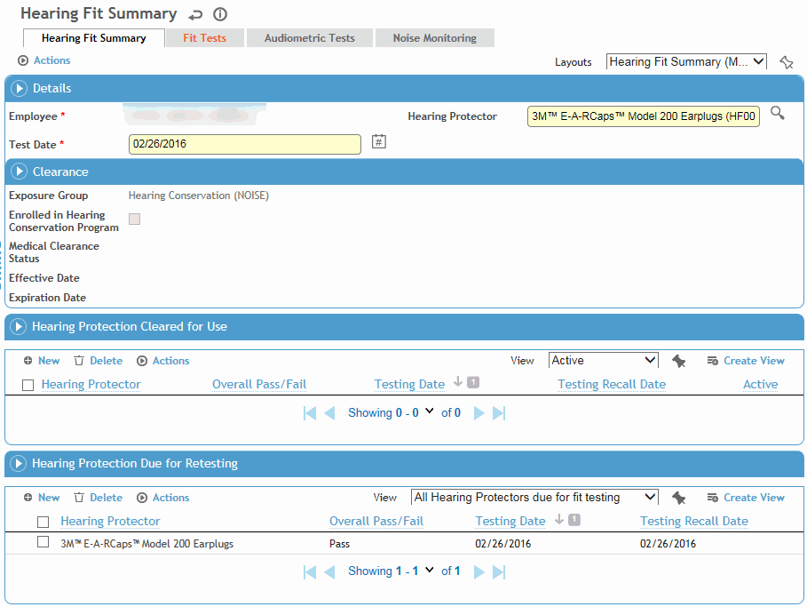
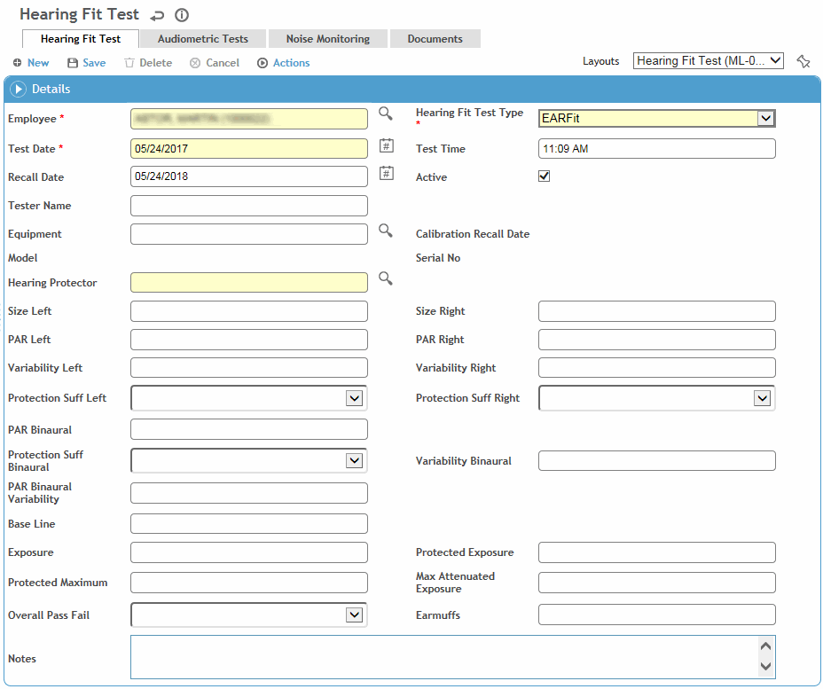

In the IH menu click Hearing Fit and use the search list to select an employee.

If the desired employee is not listed, click New to create a new fit test record (skip to step 3).
or
If the desired employee is listed, click the link to view the employee’s fit test information.
You will see a Hearing Fit Summary record containing employee details, employee clearance status, hearing protection cleared for use and hearing protection due for re-testing. The clearance section populates based on the following:
Exposure Group: per “Hearing Conservation Program SEG” system setting
Enrolled in Hearing Conservation Program: checkbox populated from the EmployeeExposureGroup noted in system setting with Start date = not null and end date= null, exclude = 0.
Medical Clearance Status: clearance status in clinic visit exam activities for exposure group noted in “Hearing Conservation Program SEG” system setting.
Effective Date and Expiration Date: medical clearance status in clinic exam activities.

The Hearing Protection Cleared for Use section displays fit tests the employee has passed. The Hearing Protection Due for Retesting section displays active fit hearing protectors due for fit testing.
Additional tabs allow you to access all of the employee’s Fit Test and Audiometric records, as well as any Noise Monitoring records the employee is associated with.
To create a new hearing fit record, click New in either the main hearing fit module list screen, or on the Fit Test tab (continue as in step 3).
The fit test form opens. On the Hearing Fit Test tab, enter or update information about the test.

Most fields are self-explanatory, but you should know:
The testing Recall Date may be calculated based on a recall period and gap if defined in your system settings. If these system settings are not defined, Cority will not calculate a recall date; you will need to manually enter a recall date if one is needed.
Hearing protectors are Active by default. If a hearing protector is no longer used by the employee, clear the Active checkbox to ensure they are no longer recalled for future fit tests for that hearing protector. If you clear the checkbox, it will also be cleared for all Hearing Fit Test records for the same employee and hearing protector. To reactivate a specific fit test record if a hearing protector is reissued to an employee, reselect the Active checkbox.
Click Save.
The Audiometric Tests tab displays all audiometric tests for the employee, including pertinent results. Click a link to view the full record in the Audiometric module (see Working with Audiometric Test Results).
The Noise Monitoring tab displays all noise monitoring samples associated with this employee. Click a link to view the full record (see Recording a Noise Monitoring Sample Record).
Use the Documents tab to link an external file to the record to provide easy access to the file (for more information, see Linking or Importing a Document).